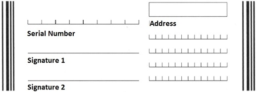

概述
条码输入选项指定用于扫描的设备硬件，以及应用于采集数据的解码器，然后再发送采集的数据以进行处理。DataWedge 随附的解码器说明如下。DataWedge 还提供音频和其他反馈，以提醒用户扫描结果和条码类型。请参阅扫描器参数部分，获取更多信息。
如果使用 SimulScan，请参阅 SimulScan 输入配置文件指南。
使用条码输入可指定：
- 设备摄像头
- 1D 和 2D 和成像器
- 基于激光的条码扫描器
- 通过蓝牙连接的扫描器
- USB 同步串行接口 (SSI) 扫描器
条码扫描器输入从设备内置、通过线材连接或蓝牙连接或作为扣入式模块实施的集成条码扫描器中读取数据。DataWedge 支持激光、成像器和内部摄像头。使用基本和高级数据格式处理选项（可在输出选项附近找到），处理采集的原始条码数据或设置其格式。
注意：当使用 SimulScan 时，DataWedge 将所有采集的文本级联成一个单一字符串，并针对级联的字符串执行处理。请参阅 SimulScan 部分，了解详细信息。
可使用 Set Config API 配置此功能的参数。
扫描器选择
对于条码输入，扫描器选择面板决定使用哪些扫描设备采集数据。可用扫描器列表基于存在于要配置的设备中（或连接到设备）的设备。
“自动”选项将根据下面的规则自动从可用设备列表确定最佳扫描设备。
自动扫描器选择规则：
- 如果已安装 Zebra 扫描模块或扫描/MSR 模块，将选择 2D 成像器。
- 如果没有安装扫描模块，将选择摄像头。
- 选择摄像头时，将使用后置摄像头执行扫描。
- 当选定 2D 成像器时，将使用已安装的扫描或扫描/MSR 模块执行扫描。
蓝牙扫描器
DataWedge 支持下列 Zebra 蓝牙扫描器：
- RS507 无绳指环式扫描器
- RS6000 指环式扫描器
- DS3678 超耐用型扫描器
- LI3678 超耐用型激光扫描器
- DS2278 蓝牙扫描器
- DS8178 蓝牙扫描器
根据以下规则，支持蓝牙扫描器：
- 必须配对和连接扫描器，才能在配置文件中，对 RS507 进行初始配置。
- 完成初始配置后，便可以在配置文件中启用和禁用蓝牙扫描器，即使其与设备已断开连接。但是，要配置解码器、读取器参数和其他扫描器设置，必须连接蓝牙扫描器。
- DataWedge 正在使用另一个自动选择的扫描器时，如果连接蓝牙扫描器，则 DataWedge 不会自动重新连接到后面连接的蓝牙扫描器。要重新启用蓝牙扫描器，需连接扫描器并在配置文件中选择它或重新选择“自动”选择选项。
- 自动选择和电池切换 - 如果将扫描器选项设置为自动，并且在电池切换前启用 RS507，那么切换电池后，DataWedge 将继续连接并使用 RS507 扫描器。如果切换电池后 RS507 未重新连接，则 DataWedge 将恢复到当前默认的扫描器。
- 挂起模式下保持启用 - 蓝牙和可插拔扫描器支持此模式，并可能会使得电池消耗速度比挂起模式原本预期的更快。注意：按下任何受支持扫描器的扫描触发器时，Zebra 计算设备将从挂起模式唤醒。
USB SSI 扫描器
DataWedge 支持下列 USB SSI 蓝牙扫描器：
- DS3608 USB SSI 扫描器
- LI3608 超耐用型 USB SSI 激光扫描器
- RS4000 USB SSI 指环式扫描器
- RS5000 USB SSI 指环式扫描器
支持备注：
- 仅在运行 Android 的 VC80 设备上支持 DS3608 和 LI3608 扫描器
- 必须使用带成像接口的 Symbol Native API (SNAPI) 配置扫描器
- 受支持的设备随附 SNAPI 驱动程序
- 通过 USB 端口和缆线连接扫描器
重要说明：解码参数支持会因所选扫描设备而异。有关特定于设备的支持说明，请参阅设备随附的集成商指南。
硬件触发器
此功能可配置 DataWedge 以启用/禁用将设备硬件触发器用于条码输入。默认情况下，硬件触发器处于启用状态。如果禁用，则在按下硬件触发器时不会显示扫描光束。但是，仍可使用软扫描触发器 DataWedge API Intent 激活扫描光束。使用此功能，应用程序编程人员可以在应用程序中扫描条码和文档时强制使用特定于应用程序的功能。

注意：硬件触发器在禁用后，不能用于触发扫描光束。如果扫描是由软扫描触发器 API Intent 启动的，则按下硬件触发器会取消扫描光束。
发生事件时自动切换到默认设备
此功能配置 DataWedge 以在连接时立即选择外部扫描器作为默认扫描设备，并在外部扫描器断开连接时恢复为内置扫描器。外部扫描器包括通过蓝牙、串行电缆或扣入式模块连接的设备。默认情况下禁用。仅当在扫描器选择面板中选择“自动”时才可用。
此功能旨在帮助在以下情况下减少扫描工作流中断：当引入蓝牙扫描器和/或蓝牙扫描器由于电源中断或移动到超出范围的位置而断开连接时。
对于蓝牙扫描器，如果设备以前未配对，则在自动连接之前显示配对条码。
“发生事件时自动切换到默认设备”仅在选择了“自动”时才可用。
可用选项：
- 已禁用 - 当连接或断开连接外部扫描器时，不会发生扫描器切换（默认值）。
- 连接时 - 在连接时立即选择外部扫描器作为默认扫描设备。
- 断开连接时 - 恢复为内置扫描器（基于内置扫描器在内部管理的扫描器列表中的位置，而位置会因主机设备而异）。这通常是在进行外部连接之前最近使用的扫描器（请参阅下面的“注意”）。
- 在连接/断开连接时 - 在连接时立即选择外部扫描器作为默认扫描设备。在断开连接时，恢复为在进行外部连接之前设置为默认设备的扫描器。
注意：
- 系统基于连接状态和扫描器在内部管理的扫描器列表中的位置来选择默认扫描器。如果新连接的扫描器在扫描器列表中的位置低于当前选择作为默认扫描器的扫描器，则新连接的扫描器会成为默认扫描器。
- 在只有一个内置扫描器或成像器的设备上，“断开连接时”会恢复为该内置扫描器或成像器。
全局扫描器配置
全局扫描器配置允许用户指定适用于所有支持的扫描器的通用扫描器配置。提供全局配置设置是为了在单个配置文件中配置多个扫描器，而不是在给定 DataWedge 配置文件中为每个单独扫描器指定多个个别配置。
全局扫描器配置显示用于每个扫描器的所有扫描器参数和值（即使不受特定扫描器支持）。由于此列表是全包式列表，因此个别扫描器可能不支持特定参数或值。在这种情况下，扫描期间会在 logcat 中记录错误。
启用全局扫描器配置时，仍可对特定于个别扫描器的设置进行访问，例如选项“挂起模式下保持启用”（专门应用于蓝牙和其他外围设备扫描器），即使对于“扫描器选择”选择内部扫描器作为默认扫描器也是如此（请参见图 1）。应用配置时，如果任何全局设置不适用于特定扫描器，则这些设置将无法应用，会被忽略。
配置全局设置，然后配置个别扫描器时，两种配置选项都会保存。配置会按以下顺序进行应用：
- 应用全局配置。
- 应用特定扫描器配置。
如果在设置全局扫描器配置时生成报告，则会返回已连接设备支持的值。
配置
在 DataWedge 中打开配置文件。“条码输入”部分包含选项“配置扫描器设置”。
注意：即使在“扫描器选择”中选择的扫描器断开连接时，仍可访问“配置扫描器设置”选项。在 6.8 之前的以前 DataWedge 版本中，所有扫描器参数（解码器、解码器参数等）都呈灰色显示且不可访问。
图 1.配置文件设置
轻触“配置扫描器设置”。扫描器配置设置列表会出现。
 图 2.扫描器配置
图 2.扫描器配置
轻触“选择扫描器以设置参数”。所有扫描器选项可用于允许将扫描器设置应用于所有扫描器。
 图 3.全局扫描器配置
图 3.全局扫描器配置
选择所有扫描器。一个确认消息会出现，指示之后的任何设置更改都会作为通用全局配置应用于所有扫描器。此全局设置会替换任何现有的个别扫描器设置。扫描器无需连接到设备，即可在全局扫描器配置中配置设置。
使用 Intent
可通过 SET_CONFIG Intent API 将参数 configure_all_scanners 的值设置为 "true"，从而设置全局扫描器配置。
解码器选择
许多输入方法包括可根据预期扫描目标和/或组织偏好配置的参数。启用解码器窄带选择可以帮助提高安全性，减少解码错误，并提高扫描性能。例如，定期接收使用 Code 128 码制编码的包的公司可能会考虑将其实施的 Code 128 解码器限制为非 EAN 变体。。
在配置文件中修改个别解码器的参数。每个 DataWedge 配置文件都分配有一组独特的解码器和解码器参数（如适用），以用于其相关联的应用程序。本指南介绍了解码器的选择并提供具有可配置参数的解码器的详细信息。
默认解码器
DataWedge 解码所有主要条码码制。在所有 DataWedge 配置文件（带有 * 的文件）中，默认启用常见格式。为提高扫描性能，Zebra 建议禁用与给定配置文件相关联的应用程序不需要的所有解码器。
注意：缺少可配置参数的解码器不会出现在解码器参数部分。将其他解码器链接至其相应的参数说明。
Australian Postal |
Aztec* |
Canadian Postal |
Chinese 2of5 |
||
Code 32* |
||
Datamatrix* |
||
Dutch Postal |
||
EAN-13* |
GS1 DataBar |
|
GS1 DataBar Limited |
GS1 DataBar Expanded |
|
Japanese Postal |
MacroPDF* |
|
MAILMARK |
Maxicode* |
|
MicroQR |
MacroMicroPDF* |
|
PDF417* |
QR 码* |
|
TLC 39* |
||
US Postal |
UPC-A* |
|
US4state FICS |
||
US4state |
* 默认情况下已启用
注意：带超链接的解码器指示（并链接至）可配置参数。
启用/禁用解码器
要启用或禁用解码器：
1.从要编辑的配置文件中，轻触解码器，如下突出显示。
解码器列表与步骤 2 中的图像相似。

2.通过选中/取消选中相应的复选框，选择/取消选择所需解码器。
注意：减少不必要的解码器，可以提高扫描性能。
编辑解码器参数
要编辑解码器参数：
1.从要编辑的配置文件中，轻触解码器参数，如下突出显示。
解码器列表与下面步骤 2 中的图像相似。
2.从解码器列表中，轻触一个解码器，以编辑其参数。
解码器参数
个别解码器的可编辑参数说明如下。注意：缺少可配置参数的解码器不会出现在下面的解码器参数部分。有关创建和编辑 DataWedge 配置文件的进一步说明，请参阅管理配置文件指南。
减少空白区
空白区是条码两侧的空白区域，指出码制的开头和结尾，旨在防止读取器扫描到不相关的信息。当无边距的解码器与“减少空白区级别”读取器参数一起使用时，解码器行为遵循下表： 1D 空白区级别的说明如上所示，位于读取器参数部分中，并含有重要警告。
1D 空白区级别的说明如上所示，位于读取器参数部分中，并含有重要警告。
UPCE0
报告校验位 - 校验位是指条码中用于验证数据完整性的最后一个字符。启用或禁用此选项。选中的复选框指明该选项已启用。
前导码 - 前导码字符是指包括国家/地区代码和系统字符的 UPC 条码的一部分。三个选项可用于传输 UPCE0 前导码：
前导码系统字符 - 仅传输系统字符。
前导码国家/地区和系统字符 - 传输系统字符和国家/地区代码（“0”代表美国）。
无前导码 - 不传输任何前导码。
选择适合主机系统的选项。
将 UPCE0 转换为 UPCA - 启用此项以在传输前将 UPCE0（零抑制）解码数据转换为 UPC-A 格式。转换后，数据符合 UPC-A 格式，并受 UPC-A 编程选择的影响。禁用此项以将 UPCE0 解码数据作为 UPCE0 数据传输，无需转换（默认 - 已禁用）。
UPCE1
报告校验位 - 校验位是指条码中用于验证数据完整性的最后一个字符。启用或禁用此选项。选中的复选框指明该选项已启用。
前导码 - 前导码字符是指包括国家/地区代码和系统字符的 UPC 条码的一部分。三个选项可用于传输 UPCE1 前导码：
前导码系统字符 - 仅传输系统字符。
前导码国家/地区和系统字符 - 传输系统字符和国家/地区代码（“0”代表美国）。
无前导码 - 不传输任何前导码。
选择适合主机系统的选项。
将 UPCE1 转换为 UPCA - 启用此项以在传输前将 UPCE1 解码数据转换为 UPC-A 格式。转换后，数据符合 UPC-A 格式，并受 UPC-A 编程选择的影响。禁用此项以将 UPCE1 解码数据作为 UPCE1 数据传输，无需转换。
UPCA
报告校验位 - 校验位是指条码中用于验证数据完整性的最后一个字符。启用或禁用此选项。选中的复选框指明该选项已启用。
前导码 - 前导码字符是指包括国家/地区代码和系统字符的 UPC 条码的一部分。三个选项可用于传输 UPCA 前导码：
前导码系统字符 - 仅传输系统字符。
前导码国家/地区和系统字符 - 传输系统字符和国家/地区代码（“0”代表美国）。
无前导码 - 不传输任何前导码。
选择适合主机系统的选项。
MSI
Length1* - 解码带有特定长度范围的 MSI 条码，将此值设置为下限。例如，要解码包含 4 到 12 个字符的 MSI 条码，此值需设置为 4。
Length2* - 解码带有特定长度范围的 MSI 条码，将此值设置为上限。例如，要解码包含 4 到 12 个字符的 MSI 条码，此值需设置为 12。
* 请参阅下面的解码长度部分
冗余 - 设置读取器，使得读取器在接收数据前，读取条码两次。
校验位 - 对于 MSI 条码，需要具有一个校验位，而且始终由读取器验证校验位。可以根据需要选择第二个校验位。
- 一个校验位 - 验证一个校验位。
- 两个校验位位 - 验证两个校验位。
校验位配置 - 有两种算法可用于验证第二个 MSI 校验位。选择用于对校验位进行编码的算法:
- Mod-11-10 - 第一个校验位是 MOD 11；第二个检验位是 MOD 10。
- Mod-10-10 - 两个校验位均是 MOD 10。
报告校验位 - 传输带有或不带校验位的 MSI 数据。选中该复选框将发送带有校验位的 MSI 数据。
EAN8
将 EAN8 转换为 EAN13 - 将 EAN8 数据转换为 EAN13 格式。选中该复选框表示启用此转换。
Codabar
Length1* - 解码带有特定长度范围的 Codabar 条码，将此值设置为下限。例如，要解码包含 8 到 24 个字符的 Codabar 条码，此值需设置为 8。
Length2* - 解码带有特定长度范围的 Codabar 条码，将此值设置为上限。例如，要解码包含 8 到 24 个字符的 Codabar 条码，此值需设置为 24。
* 请参阅下面的解码长度部分
冗余 - 设置读取器，使得读取器在接收数据前，读取条码两次。
Clsi 编辑 - 启用此参数会提取起始符和终止符，并在由 14 个字符组成的 Codebar 条码中的第 1 个、第 5 个和第 10 个字符后插入空白。在主机系统需要此数据格式时启用此功能。
Notis 编辑 - 启用此参数会从解码的 Codebar 条码中提取起始符和终止符。在主机系统需要此数据格式时启用此功能。
Code39
Length1* - 解码带有特定长度范围的 Code 39 条码，将此值设置为下限。例如，要解码包含 8 到 24 个字符的 Code 39 条码，此值需设置为 8。
Length2* - 解码带有特定长度范围的 Code 39 条码，将此值设置为上限。例如，要解码包含 8 到 24 个字符的 Code 39 条码，此值需设置为 24。
* 请参阅下面的解码长度部分
验证校验位 - 启用此功能，以检查所有 Code 39 条码的完整性，以验证数据符合指定的校验位算法。数字扫描器仅对包括那些包含 modulo 43 校验位的 Code 39 条码解码。仅在 Code 39 条码包含 modulo 43 校验位时，启用此功能。
报告校验位 - 传输带有或不带校验位的 Code 39 数据。选中该复选框将发送带有校验位的 Code 39 数据。
Full ASCII - Code 39 Full ASCII 是 Code 39 的一种变型，它将字符配对以便对 Full ASCII 字符集编码。选中此复选框，启用 Code 39 Full ASCII。
冗余 - 设置读取器，使得读取器在接收数据前，读取条码两次。
将 Code39 转换为 Code32 - Code 32 是 Code 39 的一种变型，由意大利医药业使用。
报告 Code32 前缀 - 在所有 Code 32 条码中添加前缀字符“A”。
安全等级 - 选项：安全等级 0、安全等级 1、安全等级 2 和安全等级 3。
Discrete 2of5
Length1* - 解码带有特定长度范围的 Discrete 2of5 条码，将此值设置为下限。例如，要解码包含 4 到 12 个字符的 Discrete 2of5 条码，此值需设置为 4。
Length2* - 解码带有特定长度范围的 Discrete 2of5 条码，将此值设置为上限。例如，要解码包含 4 到 12 个字符的 Discrete 2of5 条码，此值需设置为 12。
* 请参阅下面的解码长度部分
冗余 - 设置读取器，使得读取器在接收数据前，读取条码两次。
DotCode
反相 - 要指定用于解码 DotCode 条码的反射率，请设置选项：
- 已禁用 (0) - 仅解码具有正常反射率的 DotCode 条码。
- 已启用 (1) - 仅解码具有反相反射率的 DotCode 条码。
- 自动 (2) - 解码正常和反相反射率的 DotCode 条码（默认）。
镜像 - 要指定是否解码镜像的 DotCode 条码，请设置选项：
- 已禁用 (0) - 仅解码非镜像的 DotCode 条码。
- 已启用 (1) - 仅解码镜像的 DotCode 条码。
- 自动 (2) - 解码镜像和非镜像的 DotCode 条码（默认）。
Interleaved 2 of 5
Length1* - 解码带有特定长度范围的 Interleaved 2 of 5 条码，将此值设置为下限。例如，要解码包含 4 到 12 个字符的 Interleaved 2 of 5 条码，此值需设置为 4。
Length2* - 解码带有特定长度范围的 Interleaved 2 of 5 条码，将此值设置为上限。例如，要解码包含 4 到 12 个字符的 Interleaved 2 of 5 条码，此值需设置为 12。
* 请参阅下面的解码长度部分
冗余 - 设置读取器，使得读取器在接收数据前，读取条码两次。
Febraban - 启用或禁用将特殊的校验字符插入到长度为 14 个字符且符合特定 Febraban 标准的 Interleaved 2 of 5 条码的传输数据流中。
校验位
无校验位 - 未使用校验位。
USS 校验位 - 选择校验所有 Interleaved 2 of 5 条码的完整性，以验证数据是否符合 Uniform Symbology Specification (USS) 校验位算法。
OPCC 校验位 - 选择校验所有 Interleaved 2 of 5 条码的完整性，以验证数据是否符合 Optical Product Code Council (OPCC) 校验位算法。
报告校验位 - 传输带有或不带校验位的 Interleaved 2 of 5 数据。选中该复选框，发送带有校验位的 Interleaved 2 of 5 数据。
将 ITF-14 转换为 EAN13 - 将 14 个字符的 Interleaved 2 of 5 条码转换为 EAN-13，并以 EAN-13 传输。必须启用 Interleaved 2 of 5 条码，必须有一个前导零和一个有效的 EAN-13 校验位。
Code11
Length1* - 解码带有特定长度范围的 Code 11 条码，将此值设置为下限。例如，要解码包含 4 到 12 个字符的 Code 11 条码，此值需设置为 4。
Length2* - 解码带有特定长度范围的 Code 11 条码，将此值设置为上限。例如，要解码包含 4 到 12 个字符的 Code 11 条码，此值需设置为 12。
* 请参阅下面的解码长度部分
冗余 - 设置读取器，使得读取器在接收数据前，读取条码两次。
验证校验位 - 检查所有 Code 11 条码的完整性，以验证数据符合指定的校验位算法。它为解码的 Code 11 条码选择校验位机制。
无校验位 - 不验证校验位。
一个校验位 - 条码包含一个校验位。
两个校验位 - 条码包含两个校验位。
报告校验位 - 传输带有或不带校验位的 Code 11 数据。选中该复选框发送带有校验位的 Code 11 数据。
Code93
Length1* - 解码带有特定长度范围的 Code 93 条码，将此值设置为下限。例如，要解码包含 4 到 12 个字符的 Code 93 条码，此值需设置为 4。
Length2* - 解码带有特定长度范围的 Code 93 条码，将此值设置为上限。例如，要解码包含 4 到 12 个字符的 Code 93 条码，此值需设置为 12。
* 请参阅下面的解码长度部分
冗余 - 设置读取器，使得读取器在接收数据前，读取条码两次。
Code128
Length1* - 解码带有特定长度范围的 Code 128 条码，将此值设置为下限。例如，要解码包含 4 到 12 个字符的 Code 128 条码，此值需设置为 4。
Length2* - 解码带有特定长度范围的 Code 128 条码，将此值设置为上限。例如，要解码包含 4 到 12 个字符的 Code 128 条码，此值需设置为 12。
* 请参阅下面的解码长度部分
冗余 - 设置读取器，使得读取器在接收数据前，读取条码两次。
启用 EAN128 - 设置 EAN128 子类型。选中的复选框指明已为此标签类型启用该选项。
启用 ISBT128 - 设置 ISBT128 子类型。选中的复选框指明该选项已启用。
启用纯 Code128 - 启用其他（非 EAN 或 ISBT）Code 128 子类型。
ISBT128 Concat 模式 - 选择一个选项，以级联 ISBT 条码类型对：
Concat 模式从不 - 不级联遇到的 ISBT 条码对。
Concat 模式始终 - 系统必须有两个 ISBT 条码，才能解码并执行级联。不解码单一 ISBT 符号。
Concat 模式自动 - 立即解码并级联 ISBT 条码对。如果仅存在单一 ISBT 条码，设备必须在传输数据前，对条码解码通过冗余 - Code128 设置的次数，以确认没有其他 ISBT 条码。
检查 ISBT 表 - ISBT 规范包括一个表，其中列出了 ISBT 条码（通常成对使用）的几种类型。如果设置为 ISBT128 Concat 模式，则启用“检查 ISBT 表”来级联仅在此表中找到的那些条码对。不级联其他类型的 ISBT 条码。
安全等级 - 扫描器为 Code 128 条码提供四个等级的解码安全。随着条码的质量下降，实施更高的安全等级将弥补并有助于提高解码成功率。扫描器解码质量和安全性之间存在相反关系。Zebra 建议为任何给定应用程序谨慎选择所需的安全等级：
安全等级 0 - 此设置允许扫描器以其最主动的状态运行，同时在对大多数“符合规格”的条码解码时提供足够的安全。
安全等级 1 - 此设置可以消除大多数解码失败情况。
安全等级 2 - 如果安全等级 1 无法消除解码失败情况，请选择此选项。
安全等级 3 - 如果选择安全等级 2 但是解码仍然失败，请选择此安全等级。请注意，选择此选项是在误解码严重超出规格的条码时采取的最后一项措施。选择此安全等级可能会显著减弱扫描器的解码能力。如果必需选择此安全等级，请尝试改进条码的质量。
Grid Matrix
反相 - 要指定解码 Grid Matrix 条码的反射率，请设置选项：
- 已禁用 (0) - 仅解码具有正常反射率的 Grid Matrix 条码。
- 已启用 (1) - 仅解码具有反相反射率的 Grid Matrix 条码。
- 自动 (2) - 解码正常和反相反射率的 Grid Matrix 条码。
镜像 - 要指定是否解码镜像的 Grid Matrix 条码，请设置选项：
- 已禁用 (0) - 仅解码非镜像的 Grid Matrix 条码。
- 已启用 (1) - 仅解码镜像的 Grid Matrix 条码。
- 自动 (2) - 解码镜像和非镜像的 Grid Matrix 条码。
GS1 Datamatrix
下表描述了 Datamatrix 与 GS1 Datamatrix 之间的解码行为：
| 可以解码 | 类型 | 可以解码 | 类型 | ||
| 已启用 | 已启用 | 是 | LABEL-TYPE-DATAMATRIX | 是 | LABEL-TYPE-GS1-DATAMATRIX |
| 已启用 | 已禁用 | 是 | LABEL-TYPE-DATAMATRIX | 是 | LABEL-TYPE-DATAMATRIX |
| 已禁用 | 已启用 | 否 | [无] | 是 | LABEL-TYPE-GS1-DATAMATRIX |
| 已禁用 | 已禁用 | 否 | [无] | 否 | [无] |
注意：
- 有蓝色阴影的行指示尽管 GS1 Datamatrix 已禁用，不过作为 Datamatrix 报告的标签类型成功解码。
GS1 QR 码
下表描述了 QR 码与 GS1 QR 码之间的解码行为：
| 可以解码 | 类型 | 可以解码 | 类型 | ||
| 已启用 | 已启用 | 是 | LABEL-TYPE-QRCODE | 是 | LABEL-TYPE-GS1-QRCODE |
| 已启用 | 已禁用 | 是 | LABEL-TYPE-QRCODE | 是 | LABEL-TYPE-QRCODE |
| 已禁用 | 已启用 | 否 | [无] | 是 | LABEL-TYPE-GS1-QRCODE |
| 已禁用 | 已禁用 | 否 | [无] | 否 | [无] |
注意：
- 有蓝色阴影的行指示尽管 GS1 QR 码已禁用，不过作为 QR 码报告的标签类型成功解码。
Trioptic39
冗余 - 设置读取器，使得读取器在接收数据前，读取条码两次。
HAN XIN
HAN XIN 反相 - 检查 HanXin 解码器的反相。
Matrix 2of5
Length1* - 用于设置解码长度。
Length2* - 用于设置解码长度。
冗余 - 设置读取器要读取两次条码，然后才接受数据。
报告校验位 - 传输带有或不带校验位的 Matrix 2of5 数据。
验证校验位 - 启用此功能，以检查所有 Matrix 2of5 条码的完整性，以验证数据符合指定的校验位算法。
* 请参阅下面的解码长度部分
MicroPDF
Code 128 仿真 - 启用此选项，以将来自特定 MicroPDF417 条码的数据作为 Code 128 传输。此选项要求启用 AIM 条码 ID 字符。
启用 Code 128 仿真，以使用下列前缀之一，传输这些 MicroPDF417 条码：
]C1 如果第一个代码字是 903、904 或 905
]C2 如果第一个代码字是 908 或 909
]C0 如果第一个代码字是 910 或 911
禁用 Code 128 仿真，以使用下列前缀之一，传输这些 MicroPDF417 条码：
]L3 如果第一个代码字是 903、904 或 905
]L4 如果第一个代码字是 908 或 909
]L5 如果第一个代码字是 910 或 911。
Composite AB
UCC 链接模式：
已忽略链接标志
始终链接
自动辨别
多数据包模式：
多部分、单一数据包
多个独立读取点
使用 UPC 前导码校验位 - 报告复合解码数据时，使用在 UPC-EAN 参数中指定的 UPC 规则。
Composite C
多数据包模式：
多部分、单一数据包
多个独立读取点
Korean 3of5
Length1* - 解码带有特定长度范围的 Korean 3 of 5 条码，将此值设置为下限。例如，要解码包含 4 到 12 个字符的 Korean 3 of 5 条码，此值需设置为 4。
Length2* - 解码带有特定长度范围的 Korean 3 of 5 条码，将此值设置为上限。例如，要解码包含 4 到 12 个字符的 Korean 3 of 5 条码，此值需设置为 12。
* 请参阅下面的解码长度部分
冗余 - 设置读取器，使得读取器在接收数据前，读取条码两次。
解码器签名
解码器签名是一种特殊的条码格式，允许捕获文档区域（如签名）作为图像。它由放置在捕获区域两侧的两个相同的条形图案来标记。条形图案延伸了该区域的整个高度，例如：

有关创建上述类似签名捕获条码的帮助，请参阅解码器签名指南 (pdf)
格式 - 指定所需的输出图像格式：JPEG、BMP、TIFF。
宽度 - 指定所需的输出图像宽度（以像素为单位）。宽高比必须与签名采集条码的纵横比匹配，以避免捕获的图像失真。
高度 - 指定所需的输出图像高度（以像素为单位）。宽高比必须与签名采集条码的纵横比匹配，以避免捕获的图像失真。
JPEG 质量 - 5 到 100 之间的整数值，增量为 5，其中 100 代表最高质量的图像，5 代表最适合图像大小的质量。
每像素位数 - 指定输出图像的颜色深度。不适用于 JPEG 图像格式。可能的值：
- 0 – 1 BPP（2 级）
- 1 – 4 BPP（16 级）
- 2 – 8 BPP（256 级）
注意：处理大图像数据 - 由于单个图像的数据大小（可以是 1280 x 800 字节 = 1000 kb）可以超过单个 Intent 的大小限制，DataWedge 支持通过 Android FileProvider API 传送图像数据。对于解码器签名类型解码，所有图像数据都使用此方法进行传送。
用户应用程序应尽快从给定的 URI（统一资源标识符）复制图像文件，因为 DataWedge 在删除图像之前最多只保留 2 组已解码图像，以便在内存中创建新图像。
有关处理来自 Android 客户端应用程序的图像数据的代码示例，请参阅签名采集示例应用程序。
UK Postal
报告校验位 - 传输带有或不带校验位的 UK Postal 数据。选中该复选框发送带有校验位的 UK Postal 数据。
USPlanet
报告校验位 - 传输带有或不带校验位的 USPlanet 数据。选中该复选框发送带有校验位的 USPlanet 数据。
USPostnet
报告校验位 - 传输带有或不带校验位的 USPostnet 数据。选中该复选框发送带有校验位的 USPostnet 数据。
Webcode
Webcode 子类型 - 启用 GT Webcode 子类型的解码。选中该复选框表示启用此选项。
解码长度
通过 Length1 和 Length2 指定的容许的解码长度，如下所示：
- 可变长度 - 解码包含任意数量的字符的条码：
- 将 Length1 和 Length2 均设置为“0”（零）
- 范围 - 解码具有从 a 到 b 的特定长度范围的条码：
- 将 Length1 设置为“a”（下限），将 Length2 设置为“b”（上限）
- 两个离散长度 - 仅解码包含两个特定长度中的任一长度的条码：
- 将 Length2 设置为较短长度，将 Length1 设置为较长长度
- 一个离散长度 - 仅解码包含一个特定长度的条码：
- 将 Length1 和 Length2 均设置为所需（非零）长度
UPC/EAN 参数
UPC/EAN 参数允许对应用于多个 UPC 或 EAN 解码器的参数进行配置。

安全等级 - 扫描器为 UPC/EAN 条码提供四个解码安全等级。随着条码的质量下降，实施更高的安全等级将弥补并有助于提高解码成功率。扫描器解码质量和安全性之间存在相反关系。Zebra 建议为任何给定应用程序谨慎选择所需的安全等级：
等级 0 - 此设置允许扫描器以最快速度操作，同时在对“符合规格”的 UPC/EAN 条码解码时提供足够的安全性。
等级 1 - 随着条码质量级别降低，特定字符更容易在其他字符（即 1、2、7、8）之前，出现解码失败。如果扫描器解码失败，条码打印不佳，并且解码失败限于这些字符，请选择此安全等级。
等级 2 - 如果扫描器解码失败，条码打印不佳，并且解码失败不限于字符 1、2、7 和 8，请选择此安全等级。
等级 3 - 如果扫描器仍无法解码，请选择此安全等级。请注意，选择此选项是在解码失败严重超出规格的条码时采取的最后一项措施。选择此安全等级可能会显著减弱扫描器的解码能力。如果必需选择此安全等级，请尝试改进条码的质量。
Supplemental2 - 选中该复选框表示启用此选项。
Supplemental5 - 选中该复选框表示启用此选项。
补充条码模式
无补充 - 扫描器会出现一个 UPC/EAN 补充条码，扫描器解码 UPC/EAN，并忽略补充字符。
补充始终 - 扫描器仅解码带有补充字符的 UPC/EAN 条码，并忽略不带补充字符的条码。
补充自动 - 扫描器立即解码带有补充字符的 UPC/EAN 条码。如果条码没有补充字符，扫描器必须在传输数据前，对条码解码通过 UPC/EAN 补充冗余设置的次数，以确认没有其他补充字符。
补充智能 - 启用智能补充。在该模式下，解码器将立即返回主要板块的解码值，除非它属于以下其中一项补充类型：
- 378
- 379
- 977
- 978
- 979
- 414
- 419
- 434
- 439
如果条码前面带有上述的其中一个前缀，则它会更积极地搜索图像，获取补充并尝试扫描。如果补充扫描失败，仅返回主条码。
补充 378-379 - 为以 378 或 379 开头的 UPC/EAN 条码启用（自动区分）补充。针对任何不以 378 或 379 开头的其他 UPC/EAN 条码禁用补充读取。尝试扫描补充（如果存在）。如果补充扫描失败，仅返回主条码。
补充 978-979 - 为以 978 或 979 开头的 UPC/EAN 条码启用（自动区分）补充。针对任何不以 978 或 979 开头的另一个 UPC/EAN 条码禁用补充读取。尝试扫描补充（如果存在）。如果补充扫描失败，那么仅返回主条码。
补充 414-419-434-439 - 为以 414、419、434 或 439 开头的 UPC/EAN 条码启用（自动区分）补充。针对任何不以 414、419、434 或 439 开头的另一个 UPC/EAN 条码禁用补充读取。尝试扫描补充（如果存在）。如果补充扫描失败，仅返回主条码。
补充 977 - 为以 977 开头的 UPC/EAN 条码启用（自动区分）补充。针对任何不以 977 开头的另一个 UPC/EAN 条码禁用补充读取。尝试扫描补充（如果存在）。如果补充扫描失败，仅返回主条码。
重试计数 - 自动辨别补充的重试计数。可能的值为 2 到 20。请注意，只有在将补充模式设置为下列值之一时，才会考虑此标志：补充自动、补充智能、补充 378-379、补充 978-979、补充 977 或补充 414-419-434-439（2 到 20）。
随机校验位 - 启用随机砝码校验位验证。
线性解码 - 未使用。已弃用。
优惠券 - 启用优惠券条码解码。要成功解码优惠券条码，必须启用所有相应的解码器。
Bookland - 启用时，从下面的列表中选择 Bookland 格式。
Bookland 格式 - 启用 Bookland 时，允许为 Bookland 数据选择一个选项：
格式 ISBN-10 - 扫描器以传统的 10 位格式，报告以 978 开头、带特殊 Bookland 校验位的 Bookland 数据，以便向后兼容。在此模式下，不考虑以 979 开头的 Bookland 数据。
格式 ISBN-13 - 扫描器以 13 位数字的格式，将 Bookland 数据（以 978 或 979 开头）报告为 EAN-13，以满足 2007 ISBN-13 协议。
将 GS1 转换为 UPC EAN - 如果设置此项，则会将 GS1 条码转换为 UPC/EAN 格式。要此设置生效，必须启用 UPC/EAN 码制。选中的复选框指明该选项已启用。
读取器参数
读取器参数控制要编辑的配置文件中所选的条码读取器的特定配置选项。并非所有参数都将应用于所有读取器。
1D 空白区级别 - 设置以使得解码器尝试解码“无空白”条码：这些级别的行为会根据选定的无空白解码器的不同而有所差异。请参阅减少空白区表，了解行为：
级别 0 - 解码器将照常执行有空白解码。
级别 1 - 解码器将更主动地执行。
级别 2 - 解码器仅需要条码的一侧。
级别 3 - 解码器可以解码任何条码。
注意：较高的无空白级别将提高解码时间和解码错误的风险。Zebra 建议仅启用需要较高级别无空白条码的码制，并将所有其他码制默认为级别 1。
瞄准模式 - 开启和关闭瞄准图案。
瞄准计时器 - 设置对焦模式计时的持续时间（以毫秒为单位）。支持从 0 至 60,000 毫秒的范围，增量为 100 毫秒。
瞄准类型 - 允许选择按下触发器时的读取器行为：
触发器 - 每按一次触发器，扫描单个条码。
计时保持 - 一旦按下触发器，瞄准会话便启动并保持通过瞄计准计时器指定的时间。经过此时间后，解码会话启动并可以看见扫描光束。解码会话将保持激活状态，直到光束计时器时间到、松开触发器或已解码条码。
计时释放 - 一旦按下触发器，瞄准会话便会启动并持续到释放触发器。如果释放触发器时，瞄准计时器已过期，解码会话将以可见的扫描光束开始扫描，直到光束计时器到期或已解码条码。
按下并释放 - 当按下并释放触发器时，扫描光束便会开始。解码会话将保持激活状态，直到光束计时器过期或已解码条码。
显示 - 自动激活扫描器，并在条码出现在其视野中时立即开始扫描，无需按下任何触发器。
连续读取 - 按住扫描触发器，将持续扫描条码。同一条码可扫描多次。不支持 Zebra RS507 蓝牙指环式扫描器。
按住 - 当按下触发器时，启动扫描光束并继续解码会话，直到光束计时器过期、条码已解码或读取已取消。释放触发器后，扫描光束仍不停止。这可以避免之后因按下设备的触发器按钮而意外取消读取；在光束开启的情况下，之后按下触发器将不起作用。适用于连接到 TC57/TC77 和 PS20 设备的 TC20/TC25 和 RS6000/RS507 蓝牙扫描器的内部成像器。
DPM 照明控制 - 控制 DPM 条码的照明：
- 直接照明 - 扫描器仅使用直接（白色）照明。建议用于点刻条码 - 将部件倾斜 30 度以获得最佳解码效果。
- 间接照明 - 扫描器仅使用红色照明。推荐用于圆柱体或者曲面、粗糙、颗粒状、高反射或明显机加工表面上的激光蚀刻条码。
- 循环照明 - 扫描器在直接照明和间接照明之间交替循环。扫描器开始时使用上次成功解码期间使用的照明。
DPM 模式 - 根据条码大小优化 DPM 条码解码性能的模式（默认值为“模式 2”）：
- 已禁用 - 无特殊处理。
- DPM 模式 1 - 优化针对较小 DPM 条码（常见于电子和医疗仪器，尤其是光滑表面上）的解码性能。这些条码倾向于激光蚀刻或直接打印。
- DPM 模式 2 –优化针对较大 DPM 条码（常见于工业部件，尤其是粗糙、颗粒状或明显机加工的表面上）的解码性能。这些条码倾向于点刻或激光蚀刻。
照明亮度 - 调整扫描会话的亮度。整数值：1 - 10。
- 低 (1) - 扫描过程中使用低强度照明。
- 高 (10) - 扫描过程中使用最大强度照明（默认）。
照明模式 - 开启和关闭照明。
反相 1D 模式 - 允许选择反相 1D 条码解码选项：
已禁用 - 禁用反相 1D 码制解码。
已启用 - 启用仅反相 1D 码制解码。
自动 - 自动检测并解码正/反相 1D 码制。
图像采集模式 - 设置条码扫描器图像采集模式：
无 - 无图像采集。
解码单一图像采集 - 捕获带有解码数据的图像。
仅限图像采集 - 仅采集图像，不会调度条码数据。
注意：Zebra 建议不要在使用 DataWedge 来扫描条码时更改图像采集模式参数；DataWedge 不处理图像数据。
LCD 模式 - 用于启用/禁用 LCD 模式，以提高成像器从 LCD 显示屏（如手机，仅适用于扫描模块）读取条码的性能。使用 LCD 模式可能导致性能下降，以及解码之前十字线闪烁。
线性安全等级 - 设置读取条码的次数，以确定准确解码：
安全冗余和长度 - 根据冗余标志和条码长度，为两次读取冗余。
安全短条码或 Codabar - 如果是短条码或 Codabar，为两次读取冗余。
安全全部两次 - 所有条码均为两次读取冗余。
安全长和短 - 长条码为两次读取冗余，短条码为三次读取冗余。
安全全部三次 - 所有条码均为三次读取冗余。
硬件引擎低功率超时 - 扫描器进入低功率模式前的不活动时间（以毫秒为单位）。
拣读 - 允许选择拣读模式，用于指示成像器仅对取景器中直接位于瞄准图案十字线部分下面的条码进行解码。此功能对于在解码会话期间视域中出现多个条码，但仅一个条码需要解码的应用最为有用。
禁用 - 禁用拣读模式；可以解码视域内任何条码。
硬件拣读 - 通过向硬件发送命令，启用拣读模式。8y6
软件拣读 - 在软件中处理拣读功能；无需向硬件发送命令。
注意：
- 如果设置了“硬件拣读”或“软件拣读”模式，则某些设备上的性能可能会有所不同。
- 如果使用多条码模式，请参阅下面的重要行为备注。
低质量解码工作 - 允许用户为不良或降级质量的条码解码选择增强模式。可用选项：
工作级别 0 - 常规 1D 和 2D 条码的解码性能不受影响。
工作级别 1 - 常规 2D 条码的扫描器性能会受影响，而 Tesco Thailand 条码和 Suppository 条码的解码性能有所改进。
工作级别 2 - 与级别 1 相同。
工作级别 3 - 与级别 1 相同。
注意：工作级别 1 至工作级别 3 的性能表现相同。
光束计时器 - 设置读取器保持开启的最长时间（以毫秒计）。支持从 0 至 60,000 毫秒的范围，增量为 100 毫秒。当为读取器设置的值为 0 时，则读取器将无限期处于开启状态。
不同条码超时 - 用于防止扫描器在指定时间间隔内解码另一个条码（仅适用于将“目标类型”设置为“连续读取”时）。值为 0 表示两个连续读取点之间不需要时间间隔。
相同条码超时 - 用于防止扫描器在指定时间间隔内解码相同的条码（仅适用于将“目标类型”设置为“连续读取”时）。值为 0 表示两个连续读取点之间不需要时间间隔。
Digimarc 解码 - 用于启用/禁用对 Digimarc 的支持，Digimarc 可对传统条码数据进行编码并以不可见方式将其集成到产品包装上。通过内置成像器和后置摄像头支持。默认情况下已启用。有关 Digimarc 的更多信息。
取景器模式 - 允许选择支持的取景器模式：
已启用取景器 - 仅启用取景器。
静态十字线 - 启用取景器，屏幕中心会出现一个红色十字线，以在扫描时辅助定位条码。仅在使用摄像头进行扫描时支持此参数。
扫描模式 - 用于在单一（正常）、UDI 和基本多条码模式之间进行选择。UDI 模式./#udidecoding) 获取选定的通用设备标识符 (UDI) 参数中指定的多个同时输入。[基本多条码模式] 每次扫描获取 2 至 10 个条码，条码数在“基本多条码参数”面板中指定。默认=5。
变焦 - 解码 DotCode 条码时需要。用户需要在以下设备上将“相机变焦”值设置为 2：MC33、TC51/TC56、TC70x/TC75x、VC80x、TC52/TC57、TC72/TC77、PS20。如果在这些设备上将“相机变焦”值设置为 2 以外的任何值，则可能会对特定 DotCode 条码的解码产生负面影响。参数值：1 - 8。默认=1。
重新启动后保留配对信息 - 启用/禁用设备重新启动后自动重新连接到所连接的蓝牙扫描器。仅适用于连接的蓝牙扫描器。
请参阅下面的重要说明备注。
字符集配置
提供用于通过解码器字符集进行调整的选项。这些选项包括：
- 字符集选择
- 自动字符集首选顺序
- 自动字符集失败选项
字符集选择 - 如果与默认编码类型 UTF-8 不同，则将条码数据转换为指定编码类型。其他选项如下：自动字符集选择、ISO-8859-1、Shift_JIS 和 GB18030。
- 自动字符集选择（尽力）- 按照在“自动字符集首选顺序”列表中指定的字符集首选顺序对数据进行解码。如果无法基于列出的字符集对数据进行解码，则“自动字符集失败选项”会生效。有关更多详细信息，请参阅每个相应选项的说明。
自动字符集首选顺序 - 如果选择了“自动字符集选择（尽力）”，则按照列出的字符集的指定首选顺序对数据进行解码。在可以从多个字符集对数据进行解码的情况下，此功能十分有用。会选择列出的可以对数据成功解码的第一个字符集来对数据进行解码 - 不会考虑列表中位置较低的任何其他字符集，即使可以使用该字符集对数据成功解码。如果 DataWedge 无法从首选列表中找到字符集来对数据成功解码，则会使用在“自动字符集失败选项”中选择的字符集对数据进行解码。
首选字符集列表及其首选顺序都可进行配置。通过将字符集的“汉堡样式”图标拖动到所需位置，可重新排列顺序。要删除字符集，请长按该项目，“删除”选项会出现。要添加新字符集，请轻触右上角的“汉堡”菜单 - 一个用于添加字符集（如 UTF-8 和 GB2312）的选项会出现。

自动字符集失败选项 - 在设备无法基于“自动字符集首选顺序”列表中列出的字符集成功解码时，用于对数据进行解码。如果选择“无”，则返回“Null”作为数据字符串。

扫描参数
扫描参数可配置代码 ID 和特定于扫描器的解码反馈选项（针对要编辑的配置文件中选择的扫描器）。
注意：一些参数取决于设备。

代码 ID 类型 - 允许选择代码 ID 字符，以插入到前缀和解码的条码之间。代码 ID 字符确定了所扫描条码的代码类型。此信息对读取多条码类型的应用程序有用。可用选项：
代码 ID 类型无 - 无前缀插入。
代码 ID 类型瞄准 - 插入基于标准的三字符前缀。
代码 ID 类型符号 - 插入一个 Zebra 定义的单字符前缀。
解码触觉反馈 - 启用移动数据终端的振动模式，用作解码成功提示。
解码音频反馈 - 选择解码成功时播放的音频提示音。
解码屏幕通知 - 启用后，每次成功解码时，会有一个半透明的绿色屏幕覆盖显示 1 秒。
解码屏幕通知计时器 - 定义解码成功后显示屏幕通知的时间长度（以毫秒为单位）。计时器配置范围为 500 至 1500 毫秒。默认时间为 1000 毫秒。
解码屏幕透明度级别 - 设置解码通知绿色屏幕的透明度。透明度级别范围为 20 至 50，增量为 5。值越高，透明度（可见性）越高。
解码 LED 通知 - 启用时，按下扫描触发器，红色 LED 闪烁。
解码反馈 LED 计时器 - 定义绿色 LED 指示灯闪烁表示解码成功的时间长度（以毫秒为单位）。
蜂鸣音量通道 - 允许选择音量设置，以在播放解码音频反馈时使用。可用选项：
铃声 - 使用铃声音量设置，用于音频反馈。
音乐和媒体 - 使用音乐和媒体音量设置，用于音频反馈。
警报 - 使用警报音量设置，用于音频反馈。
通知 - 使用通知音量设置，用于音频反馈。
注意：并非所有铃声都可用作解码提示音；一些铃声在用作解码提示音时，可能会被截断。Zebra 建议在部署前，测试所有选定的提示音。
重要说明：解码参数支持会因所选扫描设备而异。有关特定于设备的支持说明，请参阅设备随附的集成商指南。
UDI 解码
通用设备标识符 (UDI) 参数可同时获取多个条码。
仅在以下设备（最高 Android P [9.x 版]）上使用成像器时支持此功能：
- TC51
- TC56
- TC70x
- TC75x
轻触“扫描模式”以启用 UDI 解码：
 当 UDI 扫描模式启用时（如上所述）...
当 UDI 扫描模式启用时（如上所述）... ...将使用选定的 UDI 输入参数。
...将使用选定的 UDI 输入参数。
UDI 解码备注
- 仅在上面列出的设备上支持 UDI 解码。
- 已收集的 UDI 数据输出可能需要调整设置标记分隔字符和/或输出顺序。有关更多信息，请参阅按键输出指南。
- 地理区域不同，UDI 设置也会有所不同。有关更多信息，请参阅按键输出、Intent 输出和/或 IP 输出指南的相关章节。
多条码解码
多条码会在单个扫描会话中获取多个唯一的条码，并可以立即或在达到指定的每次扫描条码数后传送数据。如上所述，基本多条码通过读取器参数中的扫描模式启用。
 |
访问基本多条码参数
基本多条码参数：
- 每次扫描条码数 - 指定在发送扫描数据之前，每个扫描会话要解码的唯一条码数。如果启用了即时报告，此设置不会生效。例如，如果指定了 5，则在扫描 5 个条码后，扫描器才会发送数据。默认值：5；值范围：2 到 10。
- 即时报告 - 如果启用，则解码后会立即返回每个唯一条码，无需等待扫描完指定数量的条码。如果禁用（默认），则在扫描的条码数量达到指定的每次扫描条码数后，解码数据将作为单个实体返回。
多条码备注
- 当输出为按键时，从所有条码采集的数据作为单一字符串发送。要添加分隔符，并调整输出顺序，请参阅按键输出指南。
- 拣读行为 - 如果将拣读参数设为“已禁用”，设备将尝试扫描在“基本多条码参数”面板中指定数量的条码（2 至 10 个）。如果将拣读参数设置“已禁用”以外的其他值，用户则可以移动十字线到每个将进行扫描的条码。仅在读取特定数量的条码后，才会返回数据。
- 重复条码 - 如果将要扫描的标签包含多个条码，其中一些是重复项（标签类型和数据相同），仅解码重复项中的一个；其余部分将被忽略。如果标签有两个重复条码加上另两种不同的条码，则最多可解码三个条码；一个重复项将被忽略。
- 多条码类型 - 条码可属于多标签类型，并仍在一起采集。例如，如果指定的多条码扫描数量是四个，两个条码可以是标签类型 Code 128，另外两个可以是类型 Code 39。
- 视域中的条码 - 如果扫描器视域中未初始化指定的条码数量，则扫描器将不会解码任何数据。如果扫描器的视域中包含多个条码，数量多于指定数量，扫描器将随机解码条码，直至达到指定数量。例如，如果设置计数为两个，而八个条码在视域内，扫描器将解码它看到的前两个条码，并以随机顺序返回数据。仅在读取特定数量的条码后，才会返回数据。
- 如果启用了“连续读取”和“即时报告”参数，“即时报告”将优先于连续读取，后者会被忽略。
其他 DataWedge 输入选项：
相关指南：